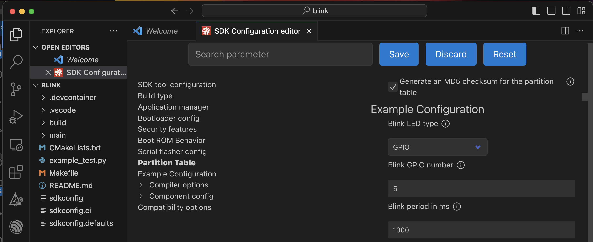

Práctica 1. Introducción al entorno
Objetivos
El objetivo de esta práctica es la introducción al entorno de desarrollo proporcionado por Espressif para sus SoC de la familia ESP32, utilizando la extensión de ESP-IDF existente en VSCode.
Aprovecharemos para ver varios aspectos del entorno ESP-IDF:
- Configuración del proyecto mediante menuconfig
- Inclusión de parámetros de configuración mediante Kconfig
- Presentación del mapa de memoria y uso del heap
Material de consulta
Para ver los detalles de cada aspecto de esta práctica se recomienda la lectura de los siguientes enlaces:
- Guía básica ESP-IDF. Si queremos usar directamente las herramientas de Espressif, conviene conocer el flujo de trabajo básico en línea de comandos.
- Extensión ESP-IDF para VSCode . Documentación de la extensión de ESP-IDF para VSCode.
- API de ESP-IDF
- Kbuild. Definición del lenguaje KConfig
- Esquemáticos placa DevKitC-v4
Extensión ESP-IDF para VSCode
ESP-IDF es el entorno de desarrollo oficial de Espressif para las series de SoC ESP32, ESP32-S y ESP32- C. Está basado en FreeRTOS, uno de los sistemas operativos de tiempo real para microcontroladores más utilizado en la actualidad. En su get-started-guide queda descrito el proceso de instalación de las herramientas nativas en línea de comando. En nuestro caso, utilizaremos la extensión oficial de Espressif de VSCode.
La primera parte de esta sesión consistirá en la instalación de dicha extensión y su configuración para volcar un ejemplo en nuestra placa ESP32. La documentación proporcionada por Espressif se encuentra en su repositorio de GitHub. A partir de ahí, es posible encontrar enlaces a diferentes tutoriales que explican con detalle el proceso de instalación, configuración, desarrollo...
-
En primer lugar, sigue los pasos indicados en su guía de instalación para instalar de la extensión en VSCode. Realiza este paso antes de venir al laboratorio, pues la instalación tardará varios minutos. Podéis saltar el paso 6 (OPCIONAL) y basta con elegir la opción EXPRESS
-
A continuación, sigue los pasos del ejemplo básico para volcar en la placa el código del ejemplo Blink. Recuerda esocger esp32-ESP32 Chip (Via USB-Bridge) como Device Target. Por ahora, salta los pasos 5 y 6 (configuración) y procede directamente a la compilación y descarga en la placa.
-
El nombre asociado al puerto serie al que se conecta la placa dependerá del sistema operativo usado. En Linux será algo similar /dev/ttyUSB0. IMPORTANTE: usando la placa ESP32-Devkit-c (del maletín), debes usar UART como método de programar el dispositivo (y no JTAG como aparece por defecto).
Cuestiones
- ¿Qué versión es la actualmente estable de ESP-IDF?
- ¿Cuál es la salida estándar por defecto de nuestro proyecto?
- ¿En qué unidades debemos expresar el argumento de
vTaskDelay()? Investiga
la macro pdTICKS_TO_MS. ¿Cómo se reescribiría esa línea usando dicha macro?
Configuración de un proyecto
ESP-IDF, en su porting de FreeRTOS, ofrece un mecanismo de configuración del proyecto, que permite especificar qué servicios de ESP-IDF necesitaremos usar y establecer parámetros de dichos servicios. Asimismo, permite definir nuestros propios parámetros de configuración mediante el lenguaje [KConfig]https://github.com/torvalds/linux/blob/master/Documentation/kbuild/kconfig-language.rst).
Para realizar dicha configuración, debemos ejecutar el comando menuconfig de la paleta
de comandos proporcionadas por la extensión de ESP-IDF (paso 5 del tutorial usado en el paso anterior). En la nueva ventanda podremos activar/desactivar módulos del sistema operativo y configurar valores de dichos módulos.
Como se puede ver en la siguiente figura, el proyecto Blink incorpora algunas opciones propias: BLINK LED Type, Blink GPIO number y Blink period.

Para que dichas opciones figuren en el menú de edición de configuraciones, se debe editar un fichero de texto Kconfig.projbuild presente en la carpeta principal ('main') del proyecto. Concretamente, el contenido del proyecto inicial es el siguiente:
menu "Example Configuration"
choice BLINK_LED
prompt "Blink LED type"
default BLINK_LED_GPIO if IDF_TARGET_ESP32
default BLINK_LED_RMT
help
Defines the default peripheral for blink example
config BLINK_LED_GPIO
bool "GPIO"
config BLINK_LED_RMT
bool "RMT - Addressable LED"
endchoice
config BLINK_LED_RMT_CHANNEL
depends on BLINK_LED_RMT
int "RMT Channel"
range 0 7
default 0
help
Set the RMT peripheral channel.
ESP32 RMT channel from 0 to 7
ESP32-S2 RMT channel from 0 to 3
ESP32-S3 RMT channel from 0 to 3
ESP32-C3 RMT channel from 0 to 1
config BLINK_GPIO
int "Blink GPIO number"
range 0 48
default 8 if IDF_TARGET_ESP32C3 || IDF_TARGET_ESP32H2
default 18 if IDF_TARGET_ESP32S2
default 48 if IDF_TARGET_ESP32S3
default 5
help
GPIO number (IOxx) to blink on and off or the RMT signal for the addressable LED.
Some GPIOs are used for other purposes (flash connections, etc.) and cannot be used to blink.
config BLINK_PERIOD
int "Blink period in ms"
range 10 3600000
default 1000
help
Define the blinking period in milliseconds.
endmenu
El lenguaje KConfig es casi autoexplicativo, y resulta sencillo ver la correspondencia entre este contenido y el menú que se muestra en la figura anterior.
Al construir el proyecto, se procesará el fichero Kconfig.projbuild que dará lugar a una versión del fichero sdkconfig con los valores escogidos para cada opción.
#
# Example Configuration
#
CONFIG_BLINK_LED_GPIO=y
# CONFIG_BLINK_LED_RMT is not set
CONFIG_BLINK_GPIO=5
CONFIG_BLINK_PERIOD=1000
# end of Example Configuration
Como se puede observar, el fichero sdkconfig recoge una serie de macros a las que podremos referirnos en nuestro código para actuar en función de sus valores. En el código de blink podemos encontrar ejemplos de ese uso:
#define BLINK_GPIO CONFIG_BLINK_GPIO
#ifdef CONFIG_BLINK_LED_RMT
static led_strip_t *pStrip_a;
static void blink_led(void)
...
#elif CONFIG_BLINK_LED_GPIO
static void blink_led(void)
...
#endif
void app_main(void)
{
/* Configure the peripheral according to the LED type */
configure_led();
while (1) {
ESP_LOGI(TAG, "Turning the LED %s!", s_led_state == true ? "ON" : "OFF");
blink_led();
/* Toggle the LED state */
s_led_state = !s_led_state;
vTaskDelay(CONFIG_BLINK_PERIOD / portTICK_PERIOD_MS);
}
}
Cuestiones
- ¿Por qué no parpadea el LED de la placa? ¿Dónde está conectado ese LED? (compruébalo en los esquemáticos placa DevKitC-v4)
- Cambia la frecuencia de parpadeo usando
menuconfig. Compila de nuevo y comprueba que el cambio ha surtido efecto - Conecta la placa con el ESP32 a un LED del entrenador del laboratorio. ¿Puedes usar cualquier pin de la placa?